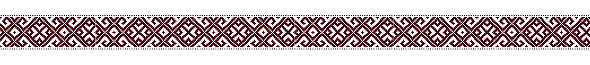
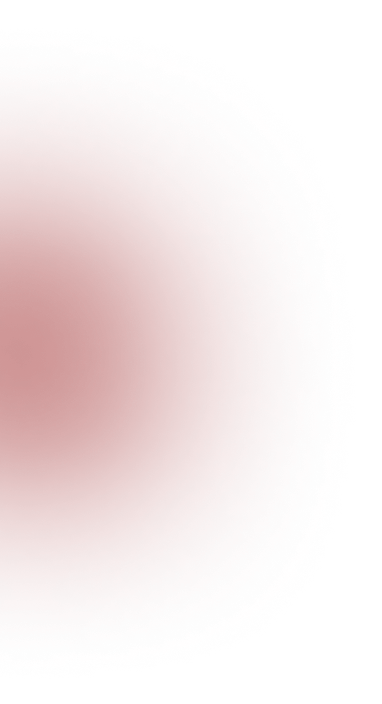
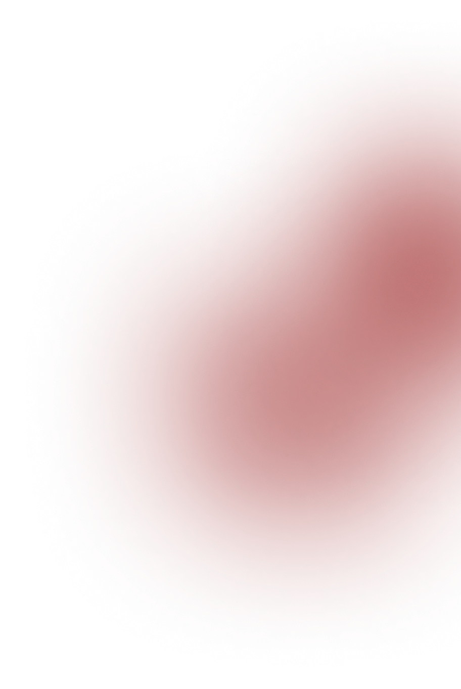

Culture
UKRAINE
This is a college project completed as part of an assignment.

Identity
Language forms the foundation of Ukrainian identity. Through poetry, literature, and oral storytelling, it preserves historical memory and strengthens a collective sense of belonging that has endured across centuries.


Traditions
Seasonal rituals remain central to cultural life. Ivana Kupala, a midsummer celebration rooted in ancient folklore, reflects the close relationship between nature, symbolism, and communal unity.
Christmas traditions, the traditional carol “Shchedryk”, composed by Mykola Leontovych, later became known worldwide as “Carol of the Bells.” This transformation illustrates how Ukrainian cultural heritage has reached a global audience while maintaining its original roots.

Symbolism
Traditional embroidery is more than decorative clothing.
Each region developed its own patterns and colors, often symbolizing
protection, prosperity, and family continuity. Historically,
embroidery was deeply personal — patterns were chosen with intention
and meaning, reflecting both regional identity and individual expression.
- Vyshyvanka patterns
- Folk songs
- Traditional rituals
- Village heritage
- Symbolic ornaments
- Family traditions